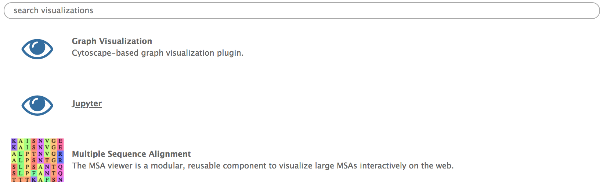

Use Jupyter notebooks in Galaxy
OverviewQuestions:
Objectives:
How to use a Jupyter Notebook in Galaxy
Learn about the Jupyter Interactive Environment
Time estimation: 30 minutesSupporting Materials:Published: Jul 2, 2018Last modification: Nov 3, 2023License: Tutorial Content is licensed under Creative Commons Attribution 4.0 International License. The GTN Framework is licensed under MITpurl PURL: https://gxy.io/GTN:T00148version Revision: 10
In this tutorial we are going to explore the basics of using Jupyter in Galaxy. We will use a RNA seq count file as a test set to get a hang of the Jupyter notebooks.
The file is available in Zenodo or in the Tutorial section of Data Libraries.
Select a file ending with .count and upload it in your history (If you want to know how to upload data in galaxy, see Getting Data into Galaxy tutorial)
AgendaIn this tutorial, we will see :
What is Jupyter ?
Jupyter in an interactive environment that mixes explanatory text, command line and output display for an interactive analysis environment. Its implementation in Galaxy facilitate the performance of additional analysis if there is no tool for it.
These notebooks allow you to replace any in-house script you might need to complete your analysis. You don’t need to move your data out of Galaxy. You can describe each step of your analysis in the markdown cells for an easy understanding of the processes, and save it in your history for sharing and reproducibility. In addition, thanks to Jupyter magic commands, you can use several different languages in a single notebook.

You can find the complete manual for Jupyter commands on Read the Docs.
Use Jupyter notebook in Galaxy
Open a Notebook
The Jupyter notebook can be started from different points. You can either open a Jupyter notebook from a dataset in your history or from the Visualize tab in the upper menu.
Hands-on: Launching a Jupyter notebook from a dataset or a saved Jupyter notebookIf you only need one dataset from your history to perform you analysis or want to open a Jupyter notebook that you previously saved in your history, you can launch a Jupyter from a single dataset.
- Expand the dataset in you history by clicking on its name.
- Click on the visualization icon galaxy-barchart of the dataset
[...].count.- Select the Jupyter visualization in the list. 
Hands-on: Lauching a Jupyter notebook from the Visualize tab
- Click on the Visualize tab on the upper menu and select
Interactive Environments- To open a notebook, set the parameters as follows :
- “GIE” :
Jupyter- “Image” :
quay.io/bgruening/docker-jupyter-notebook:17.09- “Datasets” : The datasets you want to work on, here your
[...].countfile. If the first dataset you select is a notebook from you history, it will be opened instead of a new notebook.- Click Launch
Install Libraries in Jupyter
You can install tools and libraries in Jupyter through conda and pip. In this tutorial we are going to use two libraries, pandas and seaborn respectively allowing to manipulate data as Dataframe and to create graphs.
Hands-on: Install from a Conda recipe
- Click on a cell of your notebook to edit it (verify that it is defined as a
Codecell)- Enter the following lines :
!conda install -y pandasand!conda install -y seaborn
- The
!indicate you are typing a bash command line (alternatively you can use%%bashat the beginning of your cell )- The
-yoption allows the installation without asking for confirmation (The confirmation is not managed well by notebooks)shift+returnto run the cell or click on the run cell button.
Hands-on: Import Python libraries
- Click on a cell of your notebook to edit it (verify that it is defined as a
Codecell)- Enter the following lines :
import pandas as pd,import seaborn as sns,from IPython.display import display, andimport matplotlib.pyplot as plt.shift+returnto run the cell or click on the run cell button.
Graph Display in Jupyter
In this tutorial we are going to simply plot a distribution graph of our data.
Hands-on: Draw a distribution plot
- Open the dataset as a pandas Dataframe with the function
dataframe = pd.read_table("[file_number]", header=None)
- The files are referenced in Jupyter by their number in the history.
- Create your figure with the command
fig, ax = plt.subplots( nrows=1, ncols=1 ,figsize=(15, 10) )
nrows=1, ncols=1means you will have one plot in your figure (one row and one column)figsizeparameter determine the size of the figure- Draw the distribution plot of the second column of our dataset with the command
sns.distplot(dataframe[1]);- Show the figure in the Jupyter notebook with
display(fig)

{kind=link}
Import / export Data
In addition of starting a Jupyter notebook with datasets included at the beginning , you can import them later using the get(12) command, with the number of your dataset in the history (If you are working on a collection, unhide datasets to see their numbers).
If you want to save a file you generated in your notebook, use the put("file_name") command. That is what we are going to do with our distribution plot.
Hands-on: Save an Jupyter generated image into a Galaxy History
- Create an image file with the figure you just draw with the command
fig.savefig('distplot.png')- Export your image into your history with the command
put('distplot.png')
Save the Notebook in your history
Once you are done with you analysis or anytime during the editing process, you can save the notebook into your history by clicking on the Save icon.
{kind=link}
This will create a new notebook .pynb file in your history every time you click on this icon. You can later re-open it to continue to use it as described in the open a notebook section
Conclusion
trophy You have just performed your first analysis in Jupyter notebook integrated environment in Galaxy. You generated an distribution plot that you saved in your history along with the notebook to generate it.
Key points
Start Jupyter from the Visualize tab or from a dataset
Install Libraries with pip or Conda
Use get() to import datasets from your history to the notebook
Use put() to export datasets from the notebook to your history
Save your notebook into your history
Frequently Asked Questions
Have questions about this tutorial? Check out the tutorial FAQ page or the FAQ page for the Using Galaxy and Managing your Data topic to see if your question is listed there. If not, please ask your question on the GTN Gitter Channel or the Galaxy Help ForumFeedback
Did you use this material as an instructor? Feel free to give us feedback on how it went.
Did you use this material as a learner or student? Click the form below to leave feedback.

Citing this Tutorial
- Delphine Lariviere, Use Jupyter notebooks in Galaxy (Galaxy Training Materials). https://training.galaxyproject.org/training-material/topics/galaxy-interface/tutorials/galaxy-intro-jupyter/tutorial.html Online; accessed TODAY
- Hiltemann, Saskia, Rasche, Helena et al., 2023 Galaxy Training: A Powerful Framework for Teaching! PLOS Computational Biology 10.1371/journal.pcbi.1010752
- Batut et al., 2018 Community-Driven Data Analysis Training for Biology Cell Systems 10.1016/j.cels.2018.05.012
Congratulations on successfully completing this tutorial!@misc{galaxy-interface-galaxy-intro-jupyter, author = "Delphine Lariviere", title = "Use Jupyter notebooks in Galaxy (Galaxy Training Materials)", year = "", month = "", day = "" url = "\url{https://training.galaxyproject.org/training-material/topics/galaxy-interface/tutorials/galaxy-intro-jupyter/tutorial.html}", note = "[Online; accessed TODAY]" } @article{Hiltemann_2023, doi = {10.1371/journal.pcbi.1010752}, url = {https://doi.org/10.1371%2Fjournal.pcbi.1010752}, year = 2023, month = {jan}, publisher = {Public Library of Science ({PLoS})}, volume = {19}, number = {1}, pages = {e1010752}, author = {Saskia Hiltemann and Helena Rasche and Simon Gladman and Hans-Rudolf Hotz and Delphine Larivi{\`{e}}re and Daniel Blankenberg and Pratik D. Jagtap and Thomas Wollmann and Anthony Bretaudeau and Nadia Gou{\'{e}} and Timothy J. Griffin and Coline Royaux and Yvan Le Bras and Subina Mehta and Anna Syme and Frederik Coppens and Bert Droesbeke and Nicola Soranzo and Wendi Bacon and Fotis Psomopoulos and Crist{\'{o}}bal Gallardo-Alba and John Davis and Melanie Christine Föll and Matthias Fahrner and Maria A. Doyle and Beatriz Serrano-Solano and Anne Claire Fouilloux and Peter van Heusden and Wolfgang Maier and Dave Clements and Florian Heyl and Björn Grüning and B{\'{e}}r{\'{e}}nice Batut and}, editor = {Francis Ouellette}, title = {Galaxy Training: A powerful framework for teaching!}, journal = {PLoS Comput Biol} Computational Biology} }
Galaxy Administrators: Install the missing toolsYou can use Ephemeris's
shed-tools installcommand to install the tools used in this tutorial.shed-tools install [-g GALAXY] [-a API_KEY] -t <(curl https://training.galaxyproject.org/training-material/api/topics/galaxy-interface/tutorials/galaxy-intro-jupyter/tutorial.json | jq .admin_install_yaml -r)Alternatively you can copy and paste the following YAML
--- install_tool_dependencies: true install_repository_dependencies: true install_resolver_dependencies: true tools: []